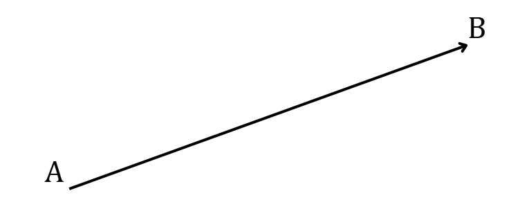
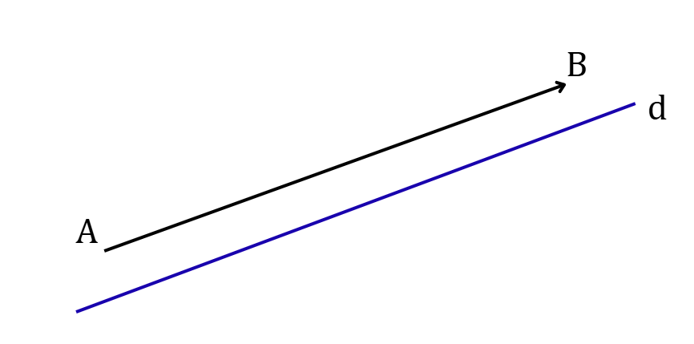
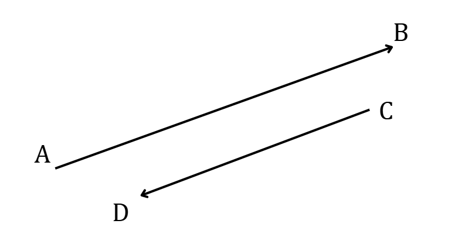
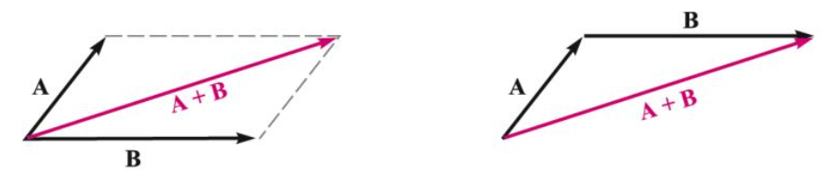
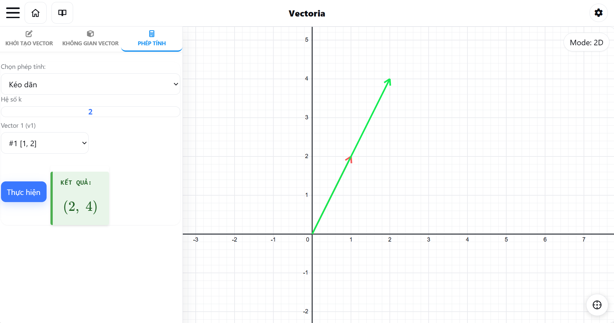

Lý thuyết
Ở phổ thông, vector được định nghĩa là một đoạn thẳng có hướng, với điểm đầu (điểm gốc) là \( A \) và điểm cuối (điểm ngọn) là \( B \), được ký hiệu là \( \overrightarrow{AB} \). Nghĩa là trong hai điểm mút của đoạn thẳng đã chỉ rõ điểm đầu và điểm cuối.

Hình 1: Đoạn thẳng có A là điểm gốc và B là điểm ngọnVề mặt đại số, để dễ dàng tính toán, ta đặt vector vào một hệ trục tọa độ. Khi đặt điểm đầu của vector tại gốc tọa độ, vector đó được biểu diễn hoàn toàn thông qua điểm cuối \( (x_1, x_2) \).
Do đó, một vector \( \vec{v} \) (hoặc \( v \)) trong mặt phẳng được biểu diễn bằng một cặp số theo thứ tự:
Các giá trị \( v_1 \) và \( v_2 \) được gọi là các thành phần (hay tọa độ) của vector \( \vec{v} \).
Độ dài của vector (còn gọi là chuẩn của vector) là khoảng cách giữa điểm đầu và điểm cuối của vector đó. Kí hiệu là \( |\overrightarrow{AB}| \), như vậy \( |\overrightarrow{AB}| = AB \). Vector có độ dài bằng 1 gọi là vector đơn vị.
Về mặt đại số, độ dài của vector được tính toán thông qua các thành phần tọa độ của nó dựa trên định lý Pythagoras. Cụ thể:
-
Nếu vector \( \vec{v} \) được cho bởi tọa độ \( \vec{v} = (x, y)
\), thì độ dài của nó được tính bởi công thức:
\( |\vec{v}| = \sqrt{x^2 + y^2} \)
-
Nếu vector \( \overrightarrow{AB} \) được tạo bởi hai điểm \(
A(x_A, y_A) \) và \( B(x_B, y_B) \), tọa độ của vector là \(
\overrightarrow{AB} = (x_B - x_A, y_B - y_A) \). Khi đó, độ dài
của nó chính là khoảng cách giữa hai điểm:
\( |\overrightarrow{AB}| = \sqrt{(x_B - x_A)^2 + (y_B - y_A)^2} \)
Đường thẳng đi qua điểm đầu và điểm cuối của một vector được gọi là giá của vector đó.

Hình 2: Vector \( \overrightarrow{AB} \) có đường thẳng d là giáHai vector được gọi là cùng phương nếu chúng có giá song song hoặc trùng nhau.
Đối với hai vector cùng phương thì chúng cùng hướng hoặc ngược hướng.

Hình 3: Vector \( \overrightarrow{AB} \) cùng phương với \( \overrightarrow{CD} \) nhưng ngược hướngHai vector được gọi là bằng nhau nếu chúng có cùng độ dài và cùng hướng.
Từ một điểm \( A \) tùy ý, ta thực hiện các bước dựng hình:
i) Dựng vector \( \overrightarrow{AB} = \vec{a} \).
ii) Từ điểm \( B \), tiếp tục dựng vector \( \overrightarrow{BC} = \vec{b} \).
Khi đó, vector \( \overrightarrow{AC} \) có điểm đầu là \( A \) và điểm cuối là \( C \) được gọi là tổng của hai vector \( \vec{a} \) và \( \vec{b} \).
Nếu hai vector \( \vec{a} \) và \( \vec{b} \) được biểu diễn chung một gốc \( A \), tức là \( \vec{a} = \overrightarrow{AB} \) và \( \vec{b} = \overrightarrow{AD} \). Khi đó, tổng của chúng là vector đường chéo \( \overrightarrow{AC} \) của hình bình hành \( ABCD \):

Hình 4: Mô phỏng hai quy tắc cộng vectorVề mặt đại số, để cộng hai vector trong mặt phẳng, ta cộng các thành phần tương ứng của chúng. Tức là, tổng của \( \vec{u} \) và \( \vec{v} \) là vector:
Vector không, ký hiệu là \( \vec{0} \), là một vector đặc biệt có độ dài bằng 0 và hướng tùy ý (hoặc không xác định hướng).
Về mặt đại số, vector \( \vec{0} = (0, 0) \) đóng vai trò là phần tử trung hòa của phép cộng. Với mọi vector \( \vec{v} \), ta luôn có:
Vector có cùng độ dài nhưng ngược hướng với vector \( \vec{v} \) được gọi là vector đối của vector \( \vec{v} \), ký hiệu là \( -\vec{v} \).
Đặc điểm quan trọng nhất của vector đối là tổng của nó với vector ban đầu luôn bằng vector không:
Lưu ý: Vector \( \vec{0} \) được coi là vector đối của chính nó.
Từ khái niệm vector đối, ta định nghĩa hiệu của hai vector \( \vec{a} \) và \( \vec{b} \) (ký hiệu là \( \vec{a} - \vec{b} \)) thực chất là tổng của vector \( \vec{a} \) với vector đối của \( \vec{b} \):
Về mặt hình học, với ba điểm \( O, A, B \) bất kỳ, ta luôn có quy tắc hiệu cực kỳ quan trọng để giải quyết các bài toán phân tích vector:
Nhận xét: Lấy điểm cuối của vector bị trừ làm điểm cuối, điểm cuối của vector trừ làm điểm đầu.
Về mặt đại số, tương tự như phép cộng, để trừ hai vector \( \vec{a} = (a_1, a_2) \) và \( \vec{b} = (b_1, b_2) \) trong mặt phẳng tọa độ, ta thực hiện phép trừ trên từng thành phần tương ứng của chúng:
Tích của một vector \( \vec{v} \) với một số thực \( k \neq 0 \) là một vector mới, ký hiệu là \( k \cdot \vec{v} \), thỏa mãn các điều kiện sau:
- Cùng phương với vector \( \vec{v} \).
- Cùng hướng với \( \vec{v} \) nếu \( k > 0 \), và ngược hướng với \( \vec{v} \) nếu \( k < 0 \).
- Độ dài: \( |k \vec{v}| = |k| \cdot |\vec{v}| \) (tức là độ dài bị kéo dãn hoặc thu hẹp đi \( |k| \) lần).
Quy ước: Nếu \( k = 0 \) hoặc \( \vec{v} = \vec{0} \), thì ta có \( k \vec{v} = \vec{0} \).
Về mặt đại số, để nhân một số thực \( k \) với vector \( \vec{v} = (v_1, v_2) \), ta chỉ cần phân phối số \( k \) đó vào từng thành phần tọa độ của vector:

Hình 5: Mô phỏng phép nhân vector với số thựcỞ hình trên, vector \( \vec{v} = (1, 2) \) nhân với số thực \( k = 2 \) để tạo thành vector mới màu xanh lá có tọa độ là \( k \cdot \vec{v} = (2, 4) \).
Vector có thể được mở rộng từ mặt phẳng lên không gian \( n \) chiều. Một vector trong không gian \( n \) chiều được biểu diễn bởi một bộ \( n \) phần tử theo thứ tự. Bộ tất cả các vector như vậy tạo thành không gian \( n \) chiều, ký hiệu là \( \mathbb{R}^n \).
Một vector \( \vec{v} \) trong không gian \( \mathbb{R}^n \) được biểu diễn dưới dạng:
Trong đó, các \( v_i \) được gọi là các thành phần (hay tọa độ) của vector \( \vec{v} \).
Hai vector \( \vec{u} = (u_1, u_2, \dots, u_n) \) và \( \vec{v} = (v_1, v_2, \dots, v_n) \) trong \( \mathbb{R}^n \) là bằng nhau khi và chỉ khi mọi thành phần tương ứng của chúng bằng nhau. Nghĩa là \( u_i = v_i \) với mọi \( i = \overline{1, n} \).
Cho hai vector \( \vec{u} = (u_1, u_2, \dots, u_n) \) và \( \vec{v} = (v_1, v_2, \dots, v_n) \) trong \( \mathbb{R}^n \), cùng với một số thực \( k \). Các phép toán cơ bản được mở rộng tự nhiên từ mặt phẳng như sau:
-
Phép cộng vector: Cộng từng thành phần tương
ứng.
\( \vec{u} + \vec{v} = (u_1 + v_1, u_2 + v_2, \dots, u_n + v_n) \)
-
Phép nhân vector với số thực (nhân vô hướng):
Nhân số thực \( k \) vào từng thành phần.
\( k \cdot \vec{u} = (ku_1, ku_2, \dots, ku_n) \)
-
Vector không: Là vector có tất cả các thành
phần bằng 0.
\( \vec{0} = (0, 0, \dots, 0) \)
-
Vector đối: Một vector đối của \( \vec{u} \) có
các thành phần mang dấu ngược lại.
\( -\vec{u} = (-u_1, -u_2, \dots, -u_n) \)
-
Phép trừ (Hiệu hai vector): Thực chất là cộng
với vector đối.
\( \vec{u} - \vec{v} = (u_1 - v_1, u_2 - v_2, \dots, u_n - v_n) \)
Lưu ý: Kể từ không gian \( \mathbb{R}^n \) trở đi, để thuận tiện trong tính toán Đại số tuyến tính, ta thường lược bỏ dấu mũi tên trên đầu và chỉ dùng các chữ cái thường (như \( u, v, x \)) để ký hiệu vector.